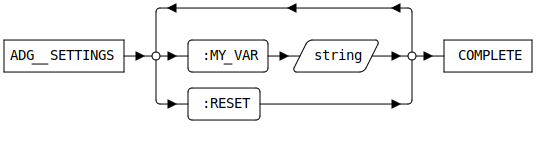

ADG_SETTINGS [Public Dialog]
Package: cadm-auto-doc-gen (Nick name(s): :adg)
Edit customizable settings for the ADGService extension module.
The settings dialog can be activated by
- Selecting the command:
File -> Settings -> Extensions -> :MODULE-TITLE.
from the Modeling top menu bar.. - Typing
ADG_SETTINGSinto the Modeling command line.
Note: Settings changed by this dialog override settings loaded from adg_customize.lsp!
Dialog

- TODO: describe UI
- Reset the settings to the startup configuration.
Syntax
